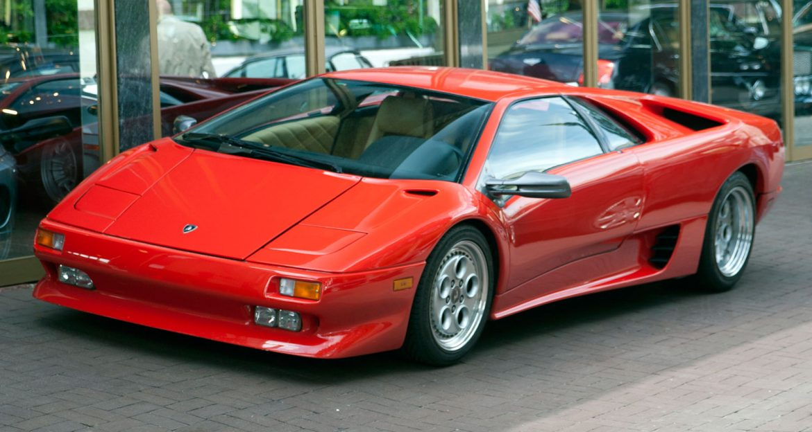

La Lamborghini Diablo est une autre supercar emblématique et légendaire produite par le constructeur automobile italien Lamborghini


Années de production: La Lamborghini Diablo a été en production de 1990 à 2001. Elle a été introduite en remplacement de la Lamborghini Countach et a été remplacée par la Lamborghini Murciélago.
Design : Le Diablo est connu pour son design agressif et futuriste, caractérisé par ses lignes pointues, ses phares escamotables et sa carrosserie spectaculaire en forme de coin.
Le design a été mis à jour au fil des années pour améliorer l'aérodynamisme et le style.
Moteur :Le Diablo était propulsé par un moteur V12 monté au milieu. Les spécifications du moteur ont évolué au fil des années, mais la version la plus célèbre était le V12 de 5,7 litres qui développait entre 485 et 530 chevaux, selon le modèle et l'année.
Les versions ultérieures, comme la Diablo VT, étaient équipées d'une transmission intégrale.
Performances :La Lamborghini Diablo était une supercar haute performance, capable d'accélérer de 0 à 60 mph en moins de 4 secondes, avec des vitesses de pointe dépassant 200 mph.
Elle était réputée pour sa vitesse et sa maniabilité impressionnantes, ce qui en faisait l'une des voitures de série les plus rapides de son époque.
Intérieur :Variantes Le Diablo avait plusieurs variantes et éditions spéciales au cours de sa production, notamment le Diablo VT (Visco Traction), le Diablo SE, le Diablo SV (Sport Veloce) et l'édition limitée Diablo GT.
Chaque variante offrait différents niveaux de performances et de fonctionnalités.
Héritage : À l'intérieur, la Diablo présentait un cockpit axé sur le conducteur avec un mélange de luxe et de sportivité. Les matériaux et caractéristiques intérieures variaient en fonction du modèle et du niveau de finition.
Collection :La Lamborghini Diablo est souvent considérée comme l'une des supercars les plus emblématiques et les plus influentes jamais construites.
Ses performances et son design ont repoussé les limites de ce qui était possible dans une voiture de série et ont contribué à la réputation de Lamborghini en tant que constructeur de voitures de sport extrêmes et exotiques.
Les Lamborghini Diablos sont très recherchées par les collectionneurs et les passionnés. Les exemplaires bien entretenus, en particulier les modèles rares en édition limitée, peuvent atteindre des prix importants sur le marché des voitures de collection.
Successeur : La Lamborghini Diablo a été remplacée par la Lamborghini Murciélago en 2001, poursuivant l'héritage des supercars phares de Lamborghini à moteur V12.
La Lamborghini Diablo reste un symbole d'extravagance, de puissance et de design automobile. C'est un classique très apprécié dans le monde des supercars et continue de conquérir le cœur des passionnés qui apprécient ses performances et son style distinctif.